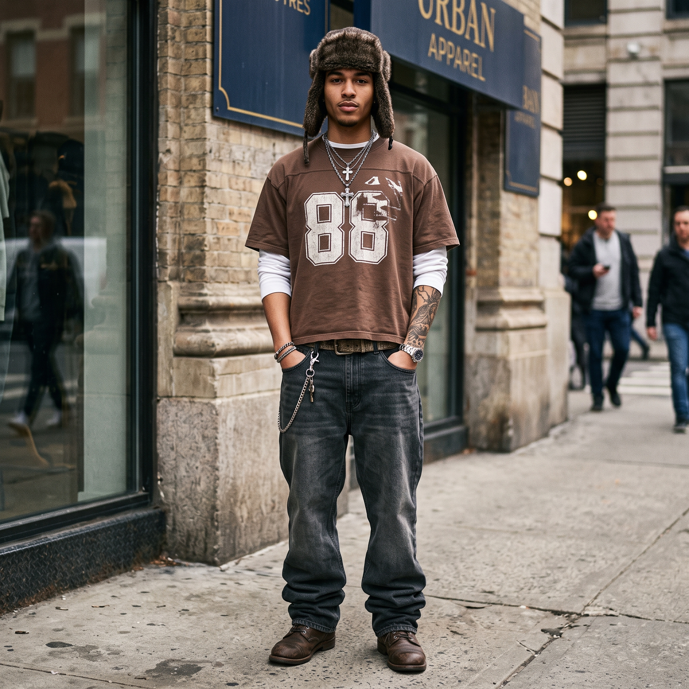

Street Drop

O streetwear é um estilo de vestimenta casual que ganhou popularidade global a partir da década de 1990. Nascido da fusão entre a cultura hip-hop de Nova York e a cultura do surfe da Califórnia, o estilo busca incorporar elementos de roupas esportivas, skate e moda urbana no dia a dia. Muito além de simples roupas de rua, a moda cumpre um papel social, cultural e político. No caso do streetwear, observamos manifestações comportamentais que cruzam fronteiras regionais e se espalham pelo mundo, refletindo a essência urbana de cada comunidade ou tribo. Ele está profundamente ligado à mentalidade, ao comportamento e ao estilo de vida das pessoas. Embora vivamos em um mundo globalizado, a cena streetwear preserva as particularidades locais. Por isso, o streetwear brasileiro carrega traços únicos que o diferenciam das vertentes americanas ou asiáticas, mesmo compartilhando várias referências em comum. Afinal, onde o streetwear teve origem? A maioria das teorias aponta que o movimento surgiu no final dos anos 1970 e início dos anos 1980, impulsionado pelo hip-hop nova-iorquino e pela cultura praiana californiana. Durante os anos 1980, o cenário passou por transformações profundas com o pop, o rock e o rap dominando as ruas, acompanhados pelo surgimento de roupas artesanais e influências culturais cruzadas dos Estados Unidos, do Japão e da Europa. Outro pilar fundamental da origem está na Califórnia, através do surfe e do skate. Antes mesmo de o termo "streetwear" existir, Shawn Stussy — um fabricante de pranchas de surfe — começou a vender camisetas estampadas com seu próprio logotipo e sobrenome junto com as pranchas. Seguindo essa linha, skatistas e surfistas passaram a produzir roupas mais soltas e confortáveis, ideais para encarar as ruas nos dias em que as ondas não estavam boas. Nos anos 90, quando o streetwear encontrou de vez o hip-hop, o movimento ganhou uma nova dimensão. Artistas populares ditavam tendências quase instantaneamente, inserindo no estilo moletons oversized, tênis marcantes, joias e releituras de itens de luxo adaptados para a vivência das periferias. Logo, as grandes marcas esportivas perceberam o potencial desse fenômeno e passaram a investir pesado no setor.

O guarda-roupa streetwear é versátil e inclui camisetas, moletons, jaquetas, bermudas, calças, tênis, mochilas e bonés. Para quem deseja adotar o estilo, o ponto de partida ideal são lojas focadas em moda urbana e esportiva. Marcas como a Prison destacam-se nesse segmento, oferecendo camisetas exclusivas, bonés e acessórios de alta qualidade voltados tanto para o público masculino quanto feminino. Com uma ampla variedade de peças e estampas que dialogam com o universo esportivo e urbano, a marca realiza entregas para todo o Brasil, facilitando o acesso de quem vive e respira essa cultura.